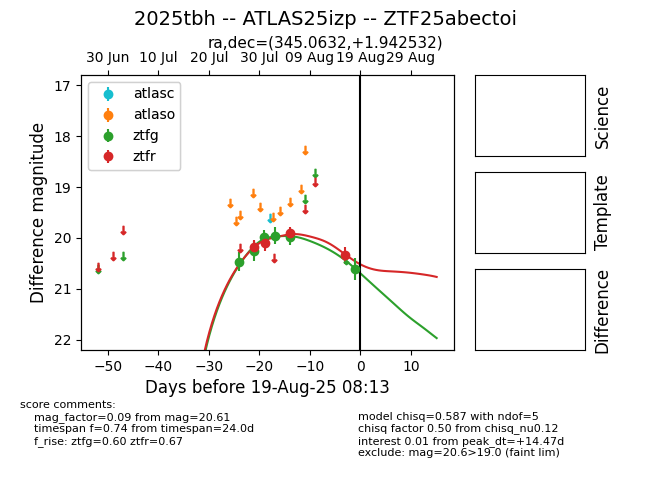

Target 2025tbh at 2025-08-19 09:59, see:
FINK: fink-portal.org/ZTF25abectoi
Lasair: lasair-ztf.lsst.ac.uk/objects/ZTF25abectoi
ALeRCE: alerce.online/object/ZTF25abectoi
TNS: wis-tns.org/object/2025tbh
YSE: ziggy.ucolick.org/yse/transient_detail/2025tbh
alt names
ZTF25abectoi (ztf,fink)
2025tbh (tns,yse)
ATLAS25izp (atlas)
coordinates:
equatorial (ra, dec) = (345.0632,+1.94253)
galactic (l, b) = (75.8461,-50.47840)
photometry
last ztfg=20.61, ztfr=20.34
6 ztfg, 4 ztfr detections
